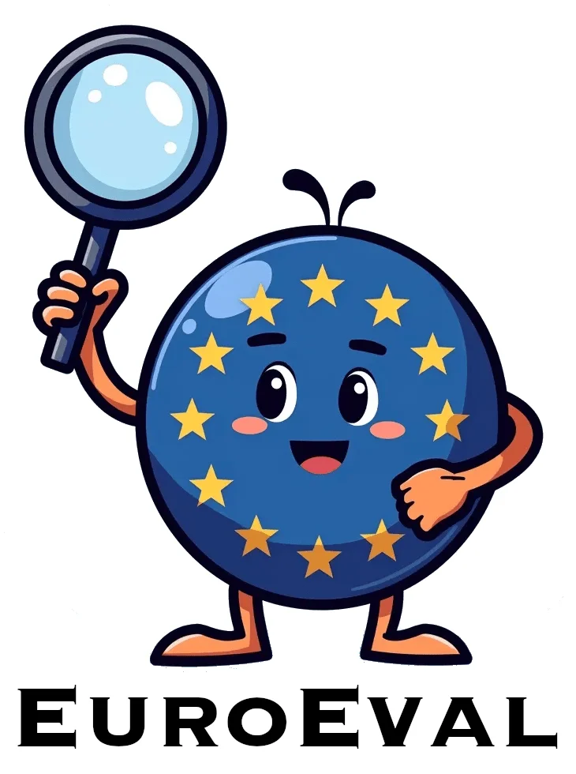
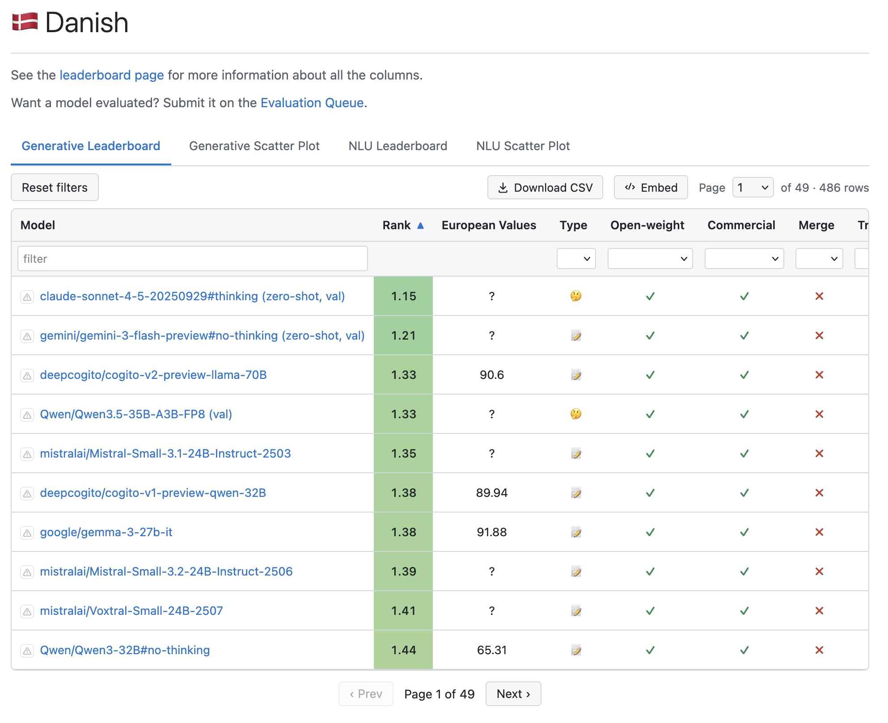

Evaluering af sprogmodeller - hvordan?

Hver familie udgiver nye versioner flere gange om året. Hvordan følger man med?
Hvem skal man tro? Og passer det også på dansk?
Producenten skal ikke selv afgøre, om deres model er god nok.
BERT, RoBERTa, ModernBERT m.fl. Fintunes på hver opgave før evaluering.
Forhåndstrænede sprogmodeller uden instruction tuning. Evalueres via few-shot prompting.
GPT, Claude, Gemini, Llama-Instruct m.fl. Zero-shot eller few-shot via chat-format.
o1, DeepSeek-R1, Claude Thinking. Eksplicit tænkeproces før svar.
Hver model køres 10 gange på bootstrappede testsæt, så scoren kommer med et 95 %-konfidensinterval i stedet for et enkelt tal. Det øger troværdigheden.
Ingen signifikant forskel på B og C. A er målbart bedst. D ligger klart bagest.
For hver opgave rangerer vi modellerne. Hvis to modeller ikke er statistisk forskellige, deler de samme rang.
I stedet for at bruge rangene direkte, udregner vi rank score, som også tager højde for hvis modellerne er tæt på eller langt fra hinanden.
En mode har rank score 1 + σ hvis den er σ standardafvigelser dårligere end den bedste model.
Opgaverne måler forskellige ting i forskellige skalaer, så et gennemsnit vil give et bias imod metrikker, der varierer mere

En model kan løse opgaven og samtidig være forudindtaget, finde på fakta, eller misforstå europæisk kontekst.
Vi har brug for evalueringer, der måler andet end rå performance.
Forstår modellen den kulturelle og politiske kontekst, vi lever i?
Hvor ofte finder modellen på fakta, der lyder rigtige?
Behandler modellen forskellige grupper ens?
156.658 respondenter på tværs af Europa. Vi udvælger 53 spørgsmål, hvor der er bred EU-konsensus.
Demokrati, lighed, tillid, civilt engagement m.fl.
Samme spørgsmål, lokaliseret.
Hvor tæt ligger modellens svarfordeling på EU-borgerens?
Modellen får et Wikipedia-uddrag og et spørgsmål. Hver token i svaret klassificeres som hallucineret eller ej, målt mod kilden.
30 europæiske sprog · 5.000 eksempler pr. sprog.
7 dimensioner: køn, alder, etnicitet, religion, seksualitet, handicap, socioøkonomi.
Dansk: 5.404 eksempler, 30 grupper.
from euroeval import Benchmarker, DatasetConfig, TEXT_CLASSIFICATION from euroeval.languages import DANISH MY_CONFIG = DatasetConfig( name="min-eval", pretty_name="Min evaluering", source=dict(train="train.csv", val="val.csv", test="test.csv"), task=TEXT_CLASSIFICATION, languages=[DANISH], labels=["positive", "negative"], ) Benchmarker().benchmark( model="din-model", dataset=MY_CONFIG, )
| text | label |
|---|---|
| Fantastisk service, kommer helt sikkert igen. | positive |
| Maden var kold og personalet uvenligt. | negative |
| text | label |
|---|---|
| Helt okay, ikke det bedste. | positive |
| Skuffende kvalitet til prisen. | negative |
| text | label |
|---|---|
| Bedste oplevelse i lang tid. | positive |
| Aldrig mere, det var skuffende. | negative |
Understøtter alle indbyggede opgaver, inklusiv LLM-as-a-judge. Du kan også let lave din egen opgave.
Test på data, der ligner det, modellen faktisk skal se i produktion.
Dine prompts og data ender ikke i et offentligt benchmark. Sværere at "game".
Samme protokol som det offentlige leaderboard. Tal kan direkte sammenlignes.
Test-data lækker ind i træningsdata. Et godt benchmark-tal kan betyde, at modellen har set svaret før. Af samme grund udskifter vi ofte evalueringsdatasæt på leaderboards.
Brug leaderboards til at lave en shortlist af kandidatmodeller. Test så disse modeller på din egen private data, før du vælger.
Det er ikke nok at være den bedste til benchmark X. Vælg på baggrund af din egen konkrete use-case.
Spørgsmål?